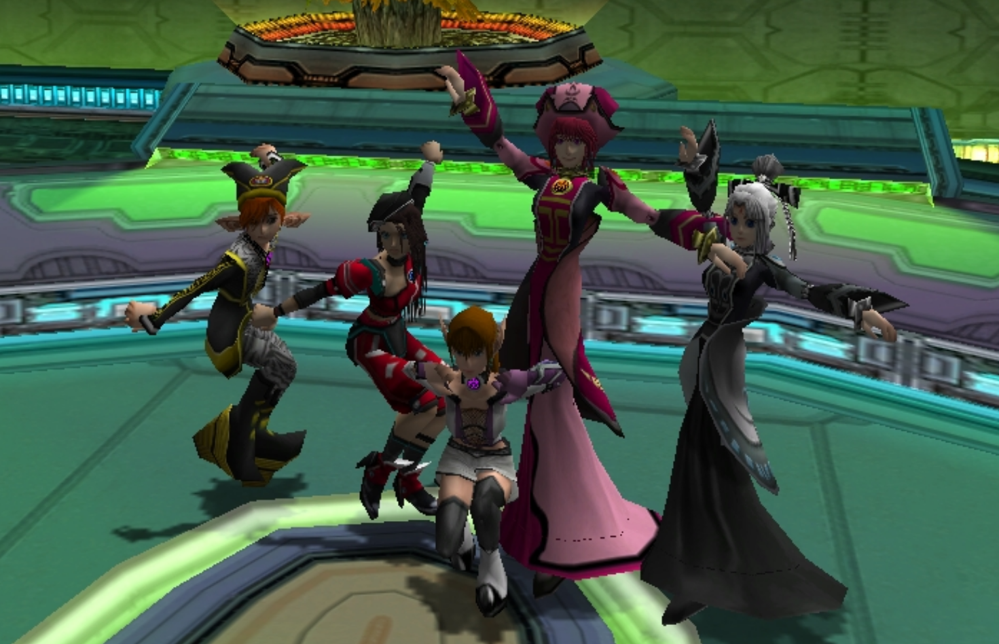

Welcome to the hidden Phantasy Star Online Blue Burst server, as a love letter for all those purist hunters seeking to relive their memories in a proper vanilla environment, the real deal.
First of all, I would like to give huge shoutouts to Martin Michelsen better known as "fuzziqersoftware" for his dedication and commitment embarking in this titanic task in bringing back our beloved game to life as a proper Open Source project called newserv, thus ensuring all PSO versions server software will always live in a public repository for many years to come inspiring a new generation of gamers, please visit newserv main Github and make sure to Star it to give it the visibility it deserves.
As for this specific server, I decided to set it up mostly due of a dire personal need to have a place where I can play PSO BB the way it was when I was playing in the official server days, after their closure, I was never able to stay playing in any of the usual public private servers because their communities had a very opinionated view of this specific version of PSO and thus, prefered to force everyone to play this game with lots of modified parameters, quests, items, monsters, and extra features that at the end made the game unbalanced whilst at the same time never bothering to implement the correct behavior of several missing original features, this is why here we will be playing in a controlled environment which will only offer the base game alongside it's original features, no more, nor less.
The server is currently a constant work in progress with the builds being updated almost daily as bugs gets fixed, I'm always searching for bugs and exploits to report in order to help improve newserv any way I can, however, if you find something broken while testing this server please let us know by creating a Github Issue Ticket so we can properly keep track of all the testing cases being done.
Lastly all I have left to say is to thank you for taking your time visiting this site and discovering PSO BB, feel free to stop by the Kiyomizu's BBS and Okekaki Board! and tell me your thoughts about PSO BB, always happy to connect with fellow hunters!
Released back in July 8th 2004 Phantasy Star Online Blue Burst (PSO BB) was the PC port of Phantasy Star Online Episodes I&II previously released on Gamecube and Xbox, which also included many new features such as:
The port was a derivative of the Xbox version as it shared architecture similarities with Windows XP at the time allowing the game to be easily ported to PC, but with all the extra additions added in this release you could consider PSO BB the GOTY edition of PSO as stated by it's producer Takao Miyoshi in recent interviews.
In addition to it's original Japanese release, the game was also released in the Chinese and American markets with limited success, as there wasn't much interest in yet another PSO version overseas with all the hype focusing towards the upcoming Phantasy Star Universe.
The game ultimately closed back in December 27th 2010 after 6 succesful years running, however I must admit, the last 2 years saw very limited content releases focusing mostly in Item or Exp boost events without any new major Quests or Items added to the game.
You will need the original Japanese PSO BB client, a clean copy of it can be found in the files area, then once you install it make sure to click on the online.exe file then select options and adjust your resolution and graphic settings to your liking, lastly, just download our modified PSOBB.exe either Japanese or English from the patch area and just rename and replace the original Psobb.exe.
The server implements a very basic account creation system, all you need to do is to type any username/password combination with a maximum length of 8 characters or less at the PSO BB title screen and connect, your account will be created instantly!, just be aware to never forget your username or password so you can always recover and log back with your account as otherwise there wont be any way to recover your account, also please use a unique password for this website for your safety.
In addition to the default keyboard controls you can also use a Gamepad with PSO BB, keep in mind it's an old game so it works better with DINPUT devices such as the Sony's Dualshock controllers rather than XINPUT devices such as Xbox 360/One/Series controllers. Plug the controller before running the game then in the F12 menu go to Options and Gamepad Settings, then select Custom and adjust the bindings to your liking.
This server will be perpetually running the latest official PSO BB version before the servers shutdown back in 2010, Version 1.25.13, that means, we are running here the original game as-is without any kind of custom content, quests, items, drops, etc. So if you are looking to play the original game as close as possible to the SEGA servers this is the most accurate recreation of it, as this server is being used for the debugging and development of newserv, it is a requirement to have just the base game without any extra parameters applied to it. I am also a legacy player myself from back in the day, so I want to have the server running just as it never ended back then, stuck in time, forever... always ready to welcome new players from a new generation without any kind of weird bells and whistles found in other more public servers so you get to enjoy the game in the same way and quality as I did when I was younger.
The server is hosted on Vultr with daily backups being made and is online 24/7, the VPS costs me around 5 USD/month which these days is about much you spend for a coffee in Starbucks. It doesn't sounds like much, even for a cash strained cat like me but I will do my best despite life situations to keep the server alive as much as I can as it also hosts my personal blog among other random things I like to do, it's my little personal corner on the Internet as I don't use social networks too much. If you want to help me out a little and you happen to be in need of a VPS for your projects or your own PSO newserv server you can sign up via the previous link, by doing so we will both receive extra server credits which help maintain this VPS running as well.
Also known as RADIX or マリナ・ベルモンテ or ルミナ or more recently as Nol Rinale in the Hunters Guild Discord. I was one of the very few players from overseas who stayed playing at the official JP BB servers from the very beginning back in 2004's Open Beta until the very last day on December 27th 2010, thanks to this game I was able to meet many wonderful friends from Japan many of which I still talk to almost 20 years later and that I had the blessing to meet personally both in Japan and inviting them to visit my country as well, this game is very important for me so this place is also like a personal museum of sorts.
{kind=link}
{kind=link}
{kind=link}
{kind=link}